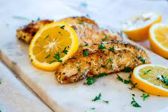

Lemon Fish Recipe

What Lemon Fish tastes like
Lemon fish is a great zingy meal that anyone witha pallet inclined towards
white fish will enjoy. This meal goes very well with spainish potatoes.
Combining these two meals will impressany dinner guests you are having over!
Ingredients
- 50g breadcrumb
- grated zest of 1 lemon
- 25g grated parmesan
- 2 tbsp chopped parsley
- salt and pepper
- 4 skinless fillets of firm white fish
- 50g butter
- juice of 1 lemon
Steps to cook
- Mix the breadcrumbs with the grated lemon zest, grated Parmesan, chopped parsley, salt and pepper.
- Season the 4 skinless fish fillets. Pan fry in a little oil for 2-3 minutes until just tender.
Turn over and sprinkle with the crumb mixture. Brown in the pan under a hot preheated grill for 2-3 minutes.
Add the butter to the pan with the juice of 1 lemon. Melt around the fish and serve.
Other Recipes
Homepage